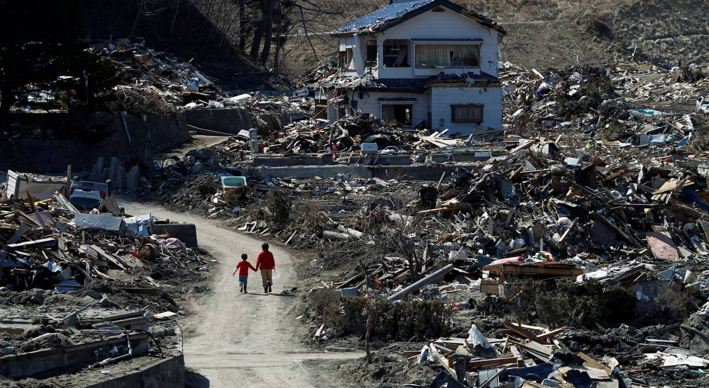

Um tremor é sentido
Fukushima, Japão. 02:46 PM
Tudo começa com um tremor de 9 graus na escala richter, tendo seu epicentro no Oceano Pacífico. Tal terremoto foi tão forte que conseguiu deslocar a ilha de Honshu em alguns metros.
O terremoto, como teve seu epicentro localizado no mar, ganhou facilidade para gerar mais outro desastre. Em torno de uma hora, uma onda com cerca de 10 metros de altura se forma. para terem uma noção, a barreira de segurança media aproximadamente de 6 a 7 metros, o que, obviamente, não conseguiu aguentar o choque com a onda.
Tal tsunami foi em direção a usina nuclear, afetando principalmente o sistema de resfriamento dos geradores que funcionavam a óleo diesel. Devido a tais acontecimentos, a radiação provida do material